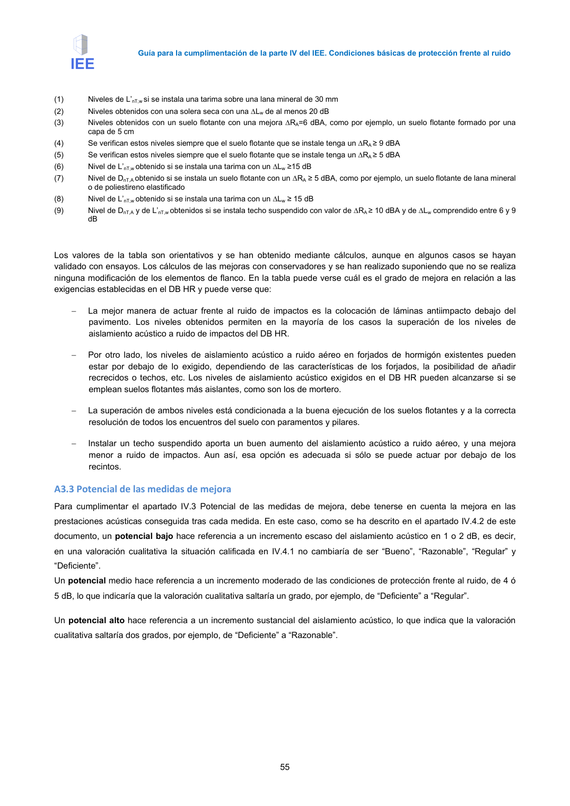

IEE 2016 · edición 2016-11-01 · capa guia
Documento GUIA-PDF-a5d4ef5252ba · SHA-256 del PDF 813669d3066c0ff79457d57b80b0512a4fbb248bc5db1f7baf473c369a064738
Página física 65 de 65.
Copia fiel del PDF fuente · Fuente oficial
Ficha de la disposición en la fuente oficial
Créditos y autoría en el PDF fuente. Reproducción con cita de fuente y autores.
Permiso literal: Se permite la reproducción del contenido total o parcial de esta Guía siempre y cuando se haga citando la fuente original.
Guía para la cumplimentación de la parte IV del IEE. Condiciones básicas de protección frente al ruido
Dirección y coordinación
Luis Vega Catalán
Mª Cristina Colomo Fernández
Eduardo González de Prado
Dirección General de Arquitectura, Vivienda y Suelo. Ministerio de Fomento
Mª Teresa Carrascal García
Instituto de Ciencias de la Construcción Eduardo Torroja. IETcc- CSIC
Autores
Mª Teresa Carrascal García
Amelia Romero Fernández
Mª Belén Casla Herguedas
Unidad de Calidad en la Construcción del Instituto de Ciencias de la Construcción Eduardo Torroja IETcc- CSIC
Se agradece la colaboración de
Belén Delgado Giménez
Fundación FIDAS
Alberto Esteban González
C.T.O. Estudios y proyectos – Gikesa
Giovanni Muzio
C.T.O. Estudios y proyectos
Francisco Labastida Azemar
Arquitecto, asesor CSCAE
Pedro F. Nogueira López
Universidad de A Coruña
Alejandro Sansegundo Sierra
Acústica SanSegundo
Esta Guía para la cumplimentación de la parte IV del IEE. Condiciones básicas de protección frente al ruido, nace en el marco del
convenio de colaboración llevado a cabo entre el Ministerio de Fomento y el Instituto de Ciencias de la Construcción Eduardo Torroja y
forma parte de la estrategia de este Ministerio de generar una serie de documentos de ayuda que faciliten la aplicación de la normativa
de la edificación y que en este caso concreto, ofrezca a los técnicos criterios para poder realizar una evaluación del estado inicial de las
edificaciones en lo referente a las condiciones acústicas de las viviendas existentes y plantear medidas que incrementen su confort
acústico.
En la redacción de este documento se ha utilizado algunos de los contenidos y de las figuras de la Guía de aplicación del DB HR
Protección frente al ruido. Dicha guía puede consultarse en:
http://www.codigotecnico.org/index.php/menu-documentos-complementarios/menu-guia-aplicacion-db-hr
Se permite la reproducción del contenido total o parcial de esta Guía siempre y cuando se haga citando la fuente original.
2Formato: Texto de la página (Markdown)
Guía para la cumplimentación de la parte IV del IEE. Condiciones básicas de protección frente al ruido 55 (1) Niveles de L’nT,w si se instala una tarima sobre una lana mineral de 30 mm (2) Niveles obtenidos con una solera seca con una ∆Lw de al menos 20 dB (3) Niveles obtenidos con un suelo flotante con una mejora ∆RA=6 dBA, como por ejemplo, un suelo flotante formado por una capa de 5 cm (4) Se verifican estos niveles siempre que el suelo flotante que se instale tenga un ∆RA ≥ 9 dBA (5) Se verifican estos niveles siempre que el suelo flotante que se instale tenga un ∆RA ≥ 5 dBA (6) Nivel de L’nT,w obtenido si se instala una tarima con un ∆Lw ≥15 dB (7) Nivel de DnT,A obtenido si se instala un suelo flotante con un ∆RA ≥ 5 dBA, como por ejemplo, un suelo flotante de lana mineral o de poliestireno elastificado (8) Nivel de L’nT,w obtenido si se instala una tarima con un ∆Lw ≥ 15 dB (9) Nivel de DnT,A y de L’nT,w obtenidos si se instala techo suspendido con valor de ∆RA ≥ 10 dBA y de ∆Lw comprendido entre 6 y 9 dB Los valores de la tabla son orientativos y se han obtenido mediante cálculos, aunque en algunos casos se hayan validado con ensayos. Los cálculos de las mejoras con conservadores y se han realizado suponiendo que no se realiza ninguna modificación de los elementos de flanco. En la tabla puede verse cuál es el grado de mejora en relación a las exigencias establecidas en el DB HR y puede verse que: − La mejor manera de actuar frente al ruido de impactos es la colocación de láminas antiimpacto debajo del pavimento. Los niveles obtenidos permiten en la mayoría de los casos la superación de los niveles de aislamiento acústico a ruido de impactos del DB HR. − Por otro lado, los niveles de aislamiento acústico a ruido aéreo en forjados de hormigón existentes pueden estar por debajo de lo exigido, dependiendo de las características de los forjados, la posibilidad de añadir recrecidos o techos, etc. Los niveles de aislamiento acústico exigidos en el DB HR pueden alcanzarse si se emplean suelos flotantes más aislantes, como son los de mortero. − La superación de ambos niveles está condicionada a la buena ejecución de los suelos flotantes y a la correcta resolución de todos los encuentros del suelo con paramentos y pilares. − Instalar un techo suspendido aporta un buen aumento del aislamiento acústico a ruido aéreo, y una mejora menor a ruido de impactos. Aun así, esa opción es adecuada si sólo se puede actuar por debajo de los recintos. A3.3 Potencial de las medidas de mejora Para cumplimentar el apartado IV.3 Potencial de las medidas de mejora, debe tenerse en cuenta la mejora en las prestaciones acústicas conseguida tras cada medida. En este caso, como se ha descrito en el apartado IV.4.2 de este documento, un potencial bajo hace referencia a un incremento escaso del aislamiento acústico en 1 o 2 dB, es decir, en una valoración cualitativa la situación calificada en IV.4.1 no cambiaría de ser “Bueno”, “Razonable”, “Regular” y “Deficiente”. Un potencial medio hace referencia a un incremento moderado de las condiciones de protección frente al ruido, de 4 ó 5 dB, lo que indicaría que la valoración cualitativa saltaría un grado, por ejemplo, de “Deficiente” a “Regular”. Un potencial alto hace referencia a un incremento sustancial del aislamiento acústico, lo que indica que la valoración cualitativa saltaría dos grados, por ejemplo, de “Deficiente” a “Razonable”.
